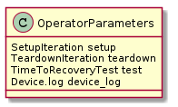
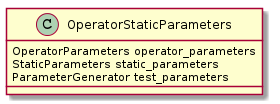
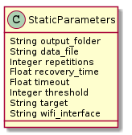
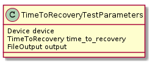

Parameters are objects passed to an object’s constructor which contain the parameters that define the initial conditions for the object.
The TestOperator defines two parameters - OperatorParameters and OperatorStaticParameters.

The OperatorParameters contain the objects that the TestOperator needs to call in its run method.

The operator_parameters are described in the previous section. StaticParameters are the mapping the Lexicographer creates from the config-file to python-values. the test_parameters is a ParameterGenerator iterator.
The Lexicographer generates StaticParameters.

These parameters map to the values declared by the APE when creating the config-file. They are provided to allow the builder to use them in creating objects for the TestOperator.
The timetorecoverytestuml requires TimeToRecoveryTestParameters.
